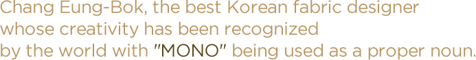
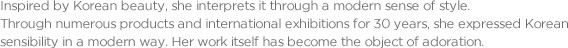
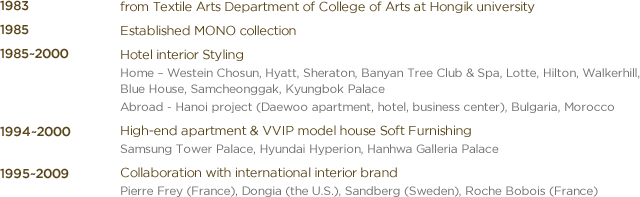
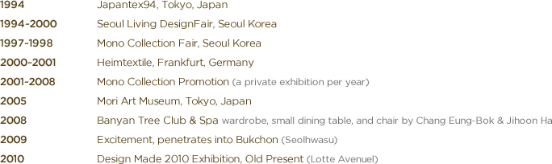
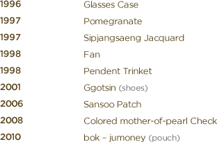

content





- 1983 : rom Textile Arts Department of College of Arts at Hongik university
- 1985 : Established MONO collection
- 1985 ~ 2000 :
- Hotel interior Styling
- Home - Westein Chosun, Hyatt, Sheraton, Banyan Tree Club & Spa, Lotte, Hilton, Walkerhill, Blue House, Samcheonggak, Kyungbok Palace
- Abroad - Hanoi project (Daewoo apartment, hotel, business center), Bulgaria, Morocco
-
1994 ~ 2000 :
- High-end apartment & VVIP model house Soft Furnishing
- Samsung Tower Palace, Hyundai Hyperion, Hanhwa Galleria Palace
-
1995 ~ 2009 :
- Collaboration with international interior brand
- Pierre Frey (France), Dongia (the U.S.), Sandberg (Sweden), Roche Bobois (France)


- 1994 : Japantex94, Tokyo, Japan
- 1994 ~ 2000 : Seoul Living DesignFair, Seoul Korea
- 1997 ~ 1998 : Mono Collection Fair, Seoul Korea
- 2000 ~ 2001 : Heimtextile, Frankfurt, Germany
- 2001 ~ 2008 : Mono Collection Promotion (a private exhibition per year)
- 2005 : Mori Art Museum, Tokyo, Japan
- 2008 : Banyan Tree Club & Spa wardrobe, small dining table, and chair by Chang Eung-Bok & Jihoon Ha
- 2009 : Excitement, penetrates into Bukchon (Seolhwasu)
- 2010 : Design Made 2010 Exhibition, Old Present (Lotte Avenuel)

- 1996 : Glasses Case
- 1997 : Pomegranate
- 1997 : Sipjangsaeng Jacquard
- 1998 : Fan
- 1998 : Pendent Trinket
- 2001 : Ggotsin (shoes)
- 2006 : Sansoo Patch
- 2008 : Colored mother-of-pearl Check
- 2010 : bok - jumoney (pouch)